타이타닉 탑승자 명단을 사용하여 타이타닉 데이터 분석 및 생존자 예측
문제 정의하기
📙 타이타닉 탑승자 명단을 통해 생존자 분석 – 디카프리오는 정말 살 수 없었을까?[ 1912년 4월 10일 영국 Southampton에서 출발하고 5일 후, 1912년 4월 15일 침몰
이진 분류 예제에 적합한 데이터셋 중 6개 변수, 1개 변수는 생존 결과로 1이면 생존, 0이면 사망
→ 6개 변수를 독립변수로 보고 생존 유무를 예측하는 이진 분류 문제로 정의 ]
✔️ 타이타닉 생존자 예측 데이터 셋 주요 컬럼 설명
▫️ Survived : 생존 여부 (0 = 사망, 1 = 생존)
▫️ Pclass : 티켓 클래스 (1 = 1등석, 2 = 2등석, 3 = 3등석)
▫️ name (승객 이름) : (Mr, Mrs, Miss ) 결혼 여부 확인
▫️ Sex : 성별 여성: Female ,Male (남성)
▫️ Age : 나이
▫️ SibSp : 함께 탑승한 형제자매 / 배우자 의 수
▫️ Parch : 함께 탑승한 부모님 / 아이들 의 수
▫️ Ticket : 티켓 번호
▫️ Fare : 탑승 요금
▫️ Cabin : 수하물 번호
▫️ Boat : 탈출한 보트가 있다면 boat 번호
▫️ Embarked : 선착장 (C = Cherbourg, Q = Queenstown, S = Southampton)
▫️ body (시신 인양 번호)
▫️ home.dest (고향 / 목적지)
📎 학습 자료 및 실습 파일 관리
학습 자료 파일을 다운로드 받으세요
등록된 파일이 없습니다.
[데이터 분석] 문제 1
기초정보분석-타이타닉 데이터셋의 생존 여부(survived) 특성에 대한 요약 통계 결과, 생존하지 못한 승객의 인원수는 총 몇 명이며 전체 승객 대비 비율은 약 몇 %인가요?
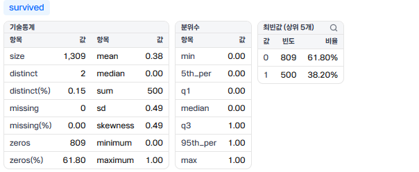
[데이터 분석] 문제 2
기초정보분석-타이타닉 데이터셋의 승선 항구(embark_town) 특성에 대한 분석 결과, 'Southampton' 항구에서 승선한 승객 수는 총 몇 명인가요?
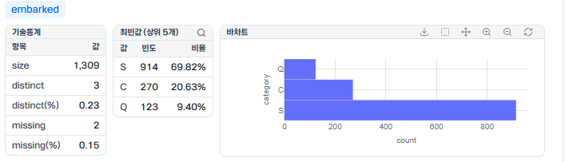
[데이터 분석] 문제 3
기초정보분석-타이타닉 데이터셋의 나이(age) 특성에 대한 기술통계 결과, 데이터의 결측치(missing) 개수는 총 몇 개이며 전체 대비 비율은 약 몇 %인가요?
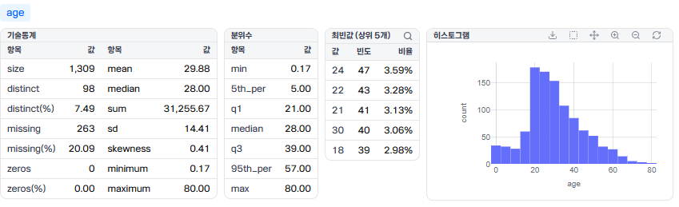
[데이터 분석] 문제 4
기초정보분석-타이타닉 데이터셋의 객실 등급(pclass)별 승객 수를 집계했을 때, 가장 많은 승객이 탑승한 객실 등급은 몇 등급이며 해당 등급의 승객 수는 몇 명인가요?
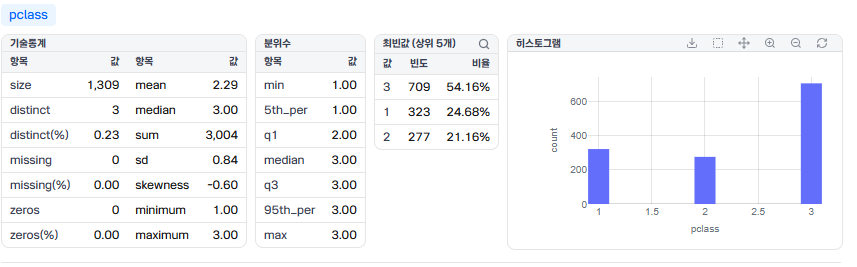
[데이터 분석] 문제 5
기초정보분석-타이타닉 데이터셋 전체 행(Row)과 열(Column)의 개수는 각각 몇 개인가요?
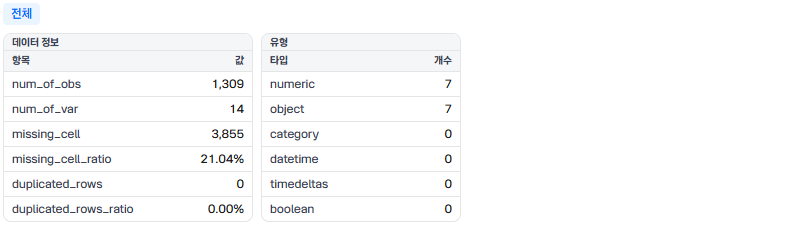
행(Row, 관측치 수): 1,309개, 열(Column, 변수 수): 14개[데이터 분석] 문제 6
산점도-나이(age)와 탑승 요금(fare)의 관계를 탐색하기 위해 산점도(Scatter Plot)를 시각화하였습니다. 연령대가 60세 이상인 승객들 중 요금(fare)을 가장 많이 지불한 승객이 지불한 요금 값은 얼마인가요?
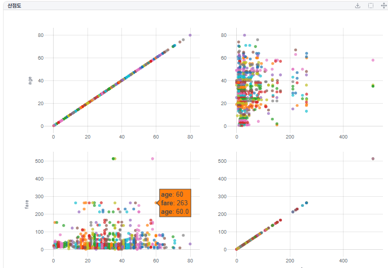
[데이터 분석] 문제 7
분포차트-타이타닉 승객의 나이(age) 특성을 파악하기 위해 히스토그램을 시각화하였습니다. 0세부터 80세까지의 연령 분포 중에서 생존자, 24세 이상 ~ 25.9세 미만 구간에 속하는 승객은 총 몇 명인가요?
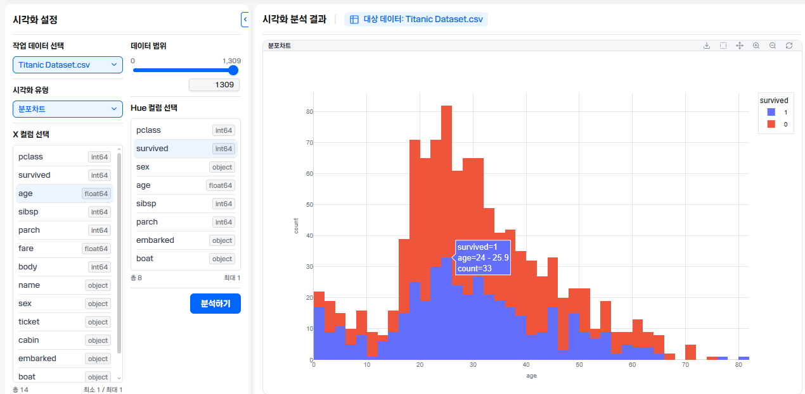
[데이터 분석] 문제 8
박스차트-승선 항구(embark_town)별 나이(age) 분포를 보여주는 박스차트(Box Plot) 분석 결과, Southampton 항구에서 Maximum 수치를 벗어나 점으로 표시된 이상치(Outlier) 중 가장 높은 나이(값)는 몇 살인가요?
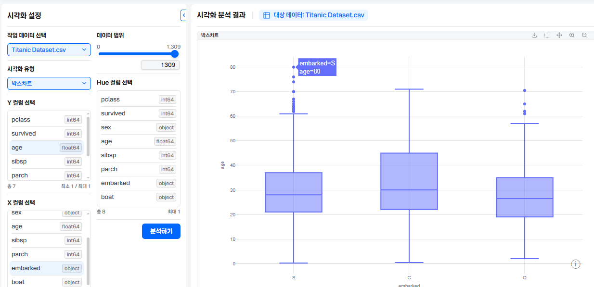
[데이터 분석] 문제 9
히트맵-타이타닉 데이터셋의 수치형 변수들 간의 상관관계 분석 결과, 자기 자신을 제외하고 가장 높은 양의 상관관계를 보여주는 변수는 무엇인가요?
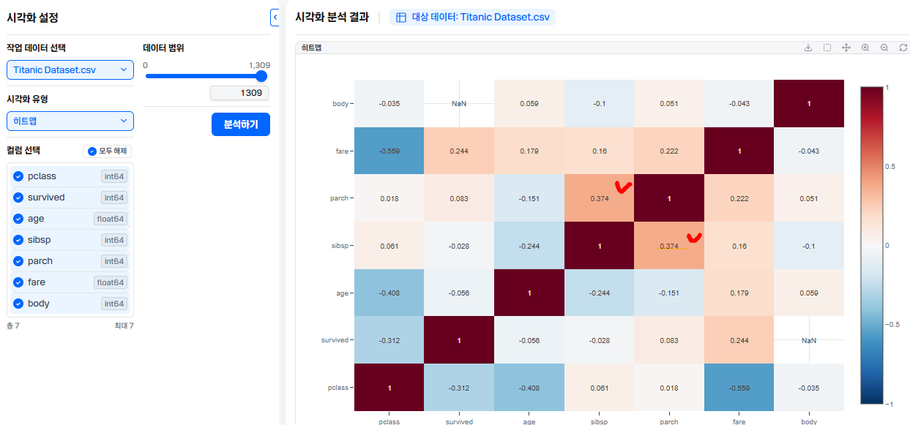
[데이터 분석] 문제 10
분포차트-성별(sex)에 따른 생존자 수를 비교하는 막대 그래프를 생성했을 때, 생존자 수(survived == 1)가 더 많은 성별과 해당 성별의 생존자 수는 몇 명인가요?
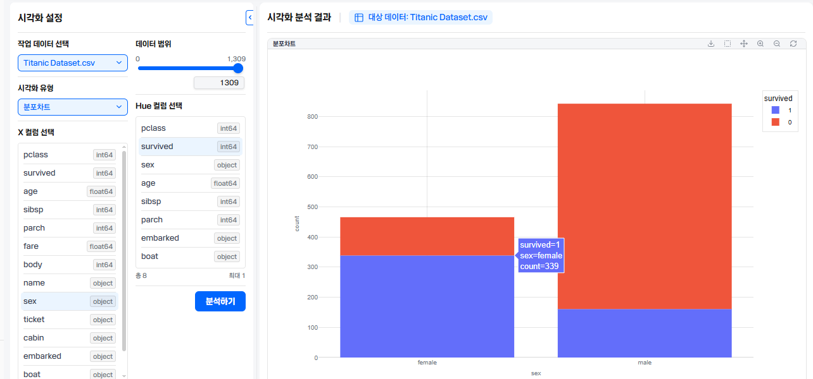
[데이터 전처리] 문제 11
나이(age) 컬럼의 결측치를 전체 승객의 나이 중앙값(Median)으로 가공한다 중앙값은?
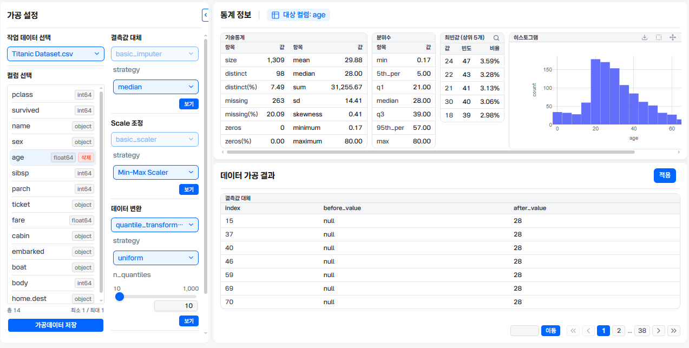
[데이터 전처리] 문제 12
수화물 번호는 데이터 가공시 strategy를 무엇으로 대체해야 적절한지 작성하시오?
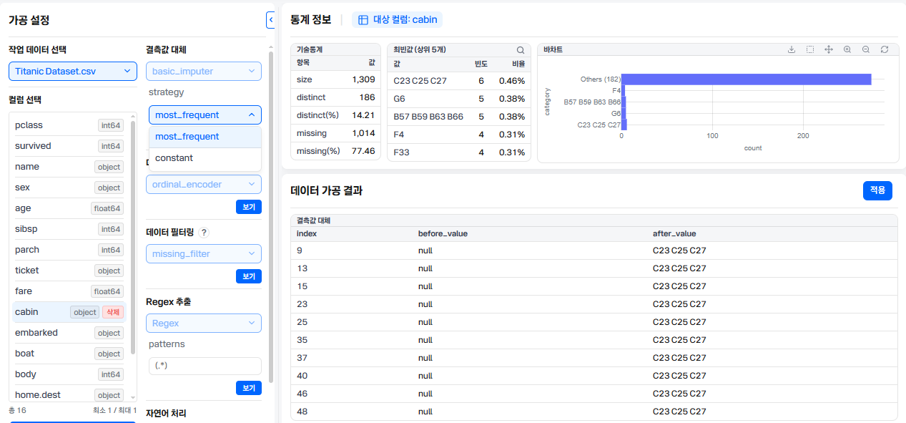
[데이터 전처리] 문제 13
데이터 가공시 body 결측값을 어떻게 처리 하는게 적절한지 작성하시오?
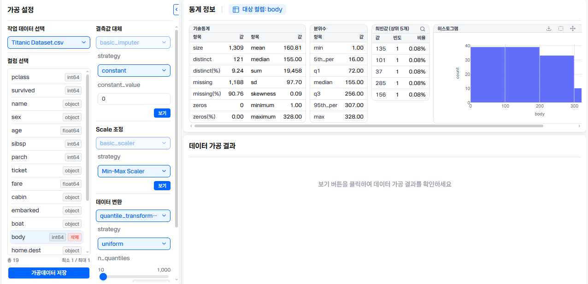
의미없는변수이므로 삭제하고 가공 안해도 되지만 꼭 해야 한다면 상수로 하고 값은 0으로 처리한다
[데이터 전처리] 문제 14
컬럼에서 home.dest의 결측치는 몇%인가?
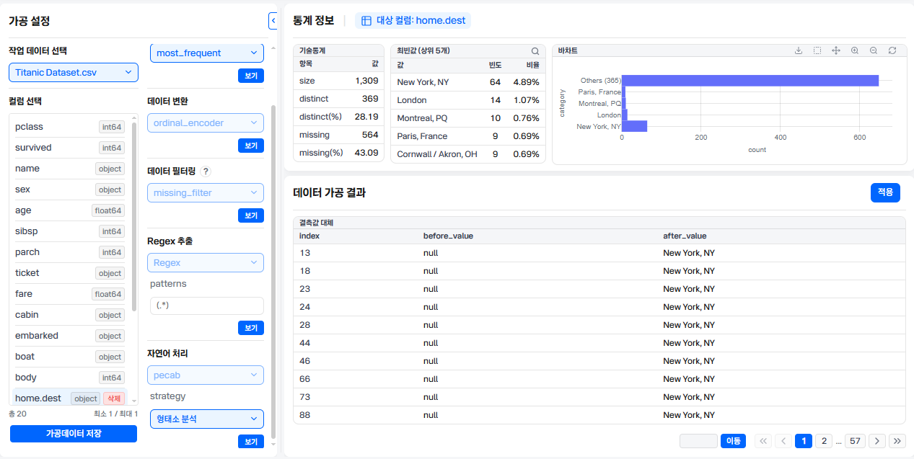
[딥러닝 학습] 문제 15
종속변수는?
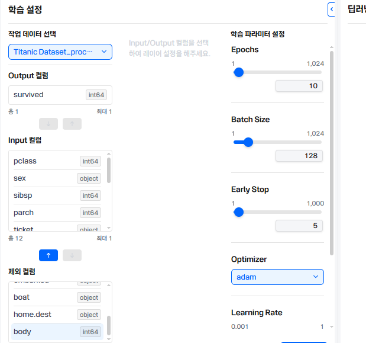
[딥러닝 학습] 문제 16
input 컬럼에서 ojbect 데이터의 데이터 유형과 인코더 선택은 ?
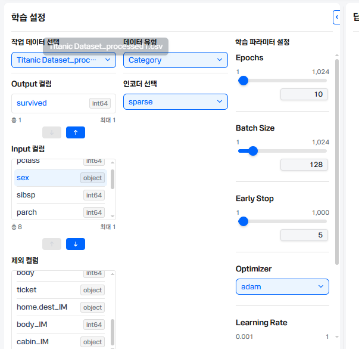
[딥러닝 학습] 문제 17
FC 레이어수2, Epochs 100 optimizer:adam, Fc활성화함수:relu 나머지 기본값 설정 학습후 정확도(accuracy)는? (소수점 2자리까지 작성하고 반올림한다)
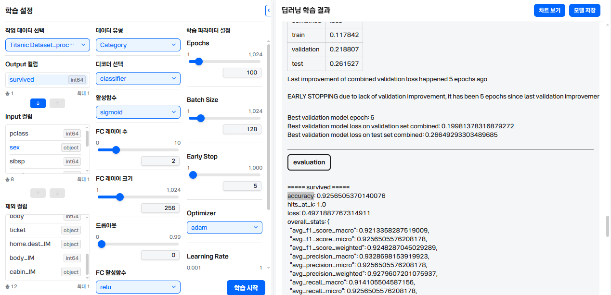
[AI모델활용] 문제 18
AI모델활용의 변수 영향도(Feature Importance) 분석 결과, 생존(survived) 여부 예측에 가장 큰 영향을 미친 상위 1위와 2위 변수명을 순서대로 각각 작성하시오.
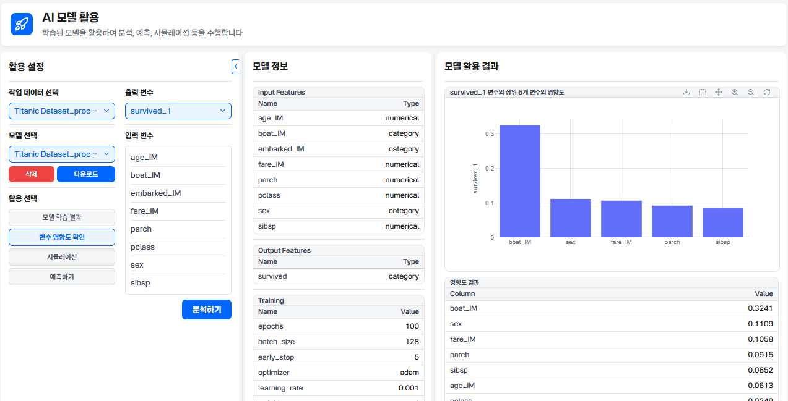
[AI모델활용] 문제 19
AI모델활용의 시뮬레이션 age_IM:24,boat_IM:13 15.embarked_IM:S,fare_IM:263, parch:2, pclass:1,sex:female, sibsp:3 을 입력하고 survived_predictions 예측 결과를 작성하시오
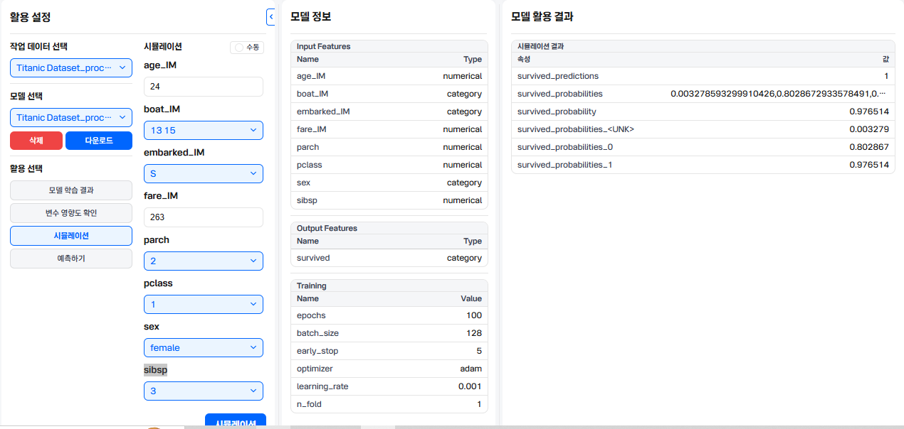